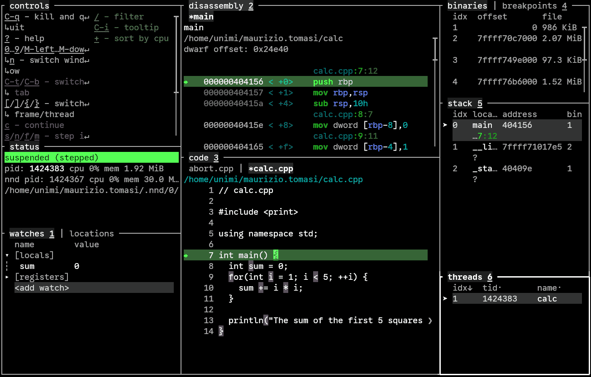
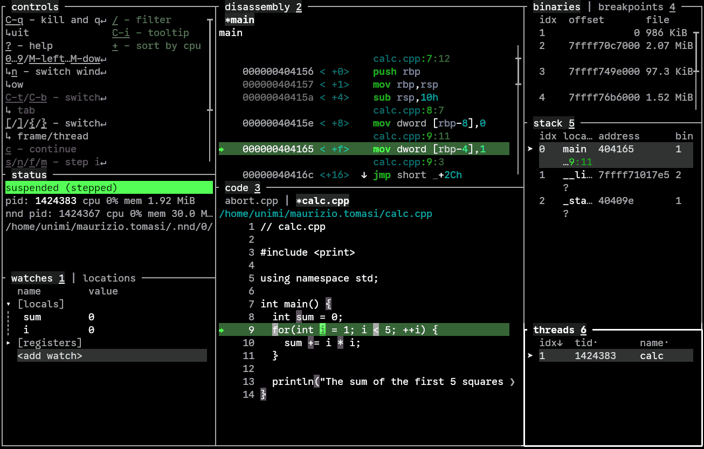

Fare debug di programmi con NND
È possibile installare il programma NND nella propria home directory con il seguente script:
$ /home/comune/labTNDS_programmi/install-nddIl programma nnd verrà installato in ~/.local/bin, che dovrebbe essere già nel vostro PATH; questo vuol dire che dovreste poter eseguire nnd direttamente.
Preliminari
Per poter usare un debugger, dovete usare la lista dei flag indicata durante la prima lezione, perché -g3 è indispensabile.
Per effettuare il debug di un programma, è sufficiente avviare nnd passandogli l’eseguibile del programma. Attenzione: se il vostro programma è nella directory corrente, dovete inserire ./ prima del suo nome:
$ nnd ./mioprogramma # "nnd mioprogramma" non funziona, ci vuole "./"!Come usare NND con un programma che va in crash
Consideriamo questo programma:
// abort.cpp
#include <cstdlib>
#include <print>
using namespace std;
int main() {
int small{150};
int large{30};
if (small > large) {
// Something is wrong here!
abort();
}
return 0;
}Il programma controlla che la variabile small sia più piccola di large, e siccome questo non è vero (150 > 30, probabilmente per un errore di battitura) il programma invoca abort(), che manda in crash il programma. Compiliamo il programma con -O0 in modo da disabilitare ogni ottimizzazione (questo semplifica il debugging):
$ g++ -std=c++23 -g3 -O0 -o abort abort.cpp
$ ./abort
Aborted (core dumped)Per verificare cosa succede, avviamo NND:
$ nnd ./abortSi aprirà questa schermata:

NDD ha già eseguito il programma ed ha visto che è stata chiamata abort(), così si è fermato.
Quello che a noi interessa è il pannello “stack 5”, sulla destra a metà altezza. Esso mostra la concatenazione di funzioni invocate che ha causato l’arresto del programma. Vediamo nell’ordine:
__GI…, che sta per__GI_raise, una funzione usata internamente daabortabort, che è proprio la funzione che abbiamo chiamato nel nostromainmain, la funzione principale del nostro programma__li…, che sta per__libc_start_main, una funzione usata internamente da Linux_sta…, che sta per_start, la primissima funzione invocata da Linux quando si esegue un programma.
Noi però vogliamo vedere cosa nel main ha causato la chiamata ad abort(), quindi dobbiamo “risalire” la lista delle chiamate e passare da __GI_raise (la prima dell’elenco, che è quella selezionata di default) a main, che è la terza.
Premendo il tasto ] (parentesi quadra chiusa), ci abbassiamo di un livello, raggiungendo abort:

Notate che nel pannello “stack 5” (che indica l’elenco delle funzioni chiamate in ordine temperale) la voce evidenziata è diventata la seconda. Premiamo ancora una volta ] per raggiungere main:

Ora che siamo nel “contesto” della chiamata ad abort(), ecco che è comparso il codice C++ nella finestra “code 3” in basso, e nella finestra in basso a sinistra (“watches 1”) sono comparsi i valori che le variabili small e large avevano nel momento in cui è stato invocato abort().
Per uscire da NDD basta premere Ctrl+q (una guida con i tasti è sempre disponibile in alto a sinistra).
Questo tipo di uso di NDD è molto comodo per investigare in quale punto del codice è stata chiamata abort(), e per visualizzare il valore delle variabili al momento del crash.
Come usare NND per investigare l’esecuzione di un programma
NND non è solo utile per analizzare il momento in cui un programma va in crash. Esso può eseguire un programma passo passo, mostrando in che modo cambia il valore delle variabili dopo ogni istruzione.
Consideriamo quest’altro esempio:
// calc.cpp
#include <print>
using namespace std;
int main() {
int sum = 0;
for(int i = 1; i < 5; ++i) {
sum += i * i;
}
println("The sum of the first 5 squares is {}", sum);
}Compiliamo il programma con -g3 -O0 (togliete poi -O0 quando avete finito di fare il debugging):
$ g++ -std=c++23 -g3 -O0 -o calc calc.cppAvviamo NND:
$ nnd ./calcQuesta è la schermata iniziale:

Siccome il programma non ha causato alcun crash, il pannello “stack 5” sulla sinistra è vuoto. Stavolta infatti vogliamo eseguire il programma passo passo, per verificare che il funzionamento sia quello atteso. Premiamo s (che sta per Start) per far partire l’esecuzione e arrestarla all’inizio del main:

NND ha fatto partire il programma, ma ne ha congelato l’esecuzione all’inizio del main, come dice il pannello a sinistra “status 2”, che riporta la scritta “suspended”. Notate che nel pannello “watches 1” in basso a sinistra è già comparsa la variabile sum, che al momento ha valore 0.
Possiamo ora eseguire il programma un’istruzione alla volta col tasto n (che sta per Next). Vedrete che la riga verde nel codice di calc.cpp va avanti di una posizione, passando dalla parentesi graffa { alla riga dove si dichiara sum:

Premendo ancora n, si passa alla riga con for, e la variabile i appare col suo valore iniziale (0) nel pannello “watches 1”:

Continuando a premere n si può osservare come le variabili i e sum cambiano di valore ad ogni iterazione.
Se però non si è interessati all’iterazione nel suo dettaglio, si può ordinare a NND di eseguire il programma fino ad una riga prestabilita. Per fare ciò basta muoversi nella finestra del codice sorgente “code 3” premendo il tasto 3 (ecco perché questi numeri sono mostrati sottolineati!), spostarsi con la freccia su ↑ e giù ↓, e premere C (che sta per Cursor). Nell’immagine qui sotto mi sono spostato sulla riga con println prima di premere C:

Come vedete, l’esecuzione è proseguita fino alla riga evidenziata, ed ora il pannello “watches 3” riporta per sum il suo valore al termine del ciclo (30).
Per uscire, come al solito basta premere Ctrl+q.
Usare NND per eseguire programmi in modo interattivo è estremamente utile.
Altri comandi di NND
NND offre moltissimi altri comandi, che sono disponibili nella guida (premere ? per consultarla). Vi consiglio di dare un’occhiata a questi comandi:
- Premere
sanzichénquando si esegue un programma passo passo permette di “entrare” dentro funzioni chiamate nelmain - Premere
Enterin corrispondenza di una riga inserisce un breakpoint, ossia un punto di arresto: vuol dire che il programma si arresterà non appena raggiunge quella riga. È funzionalmente equivalente al tastoC, che esegue fino al cursore, ma i breakpoint possono essere multipli - Spostandosi nel pannello “watches 1” (col tasto
1), è possibile cambiare il valore di variabili durante l’esecuzione premendoEnter. - Sempre nel pannello “watches 1”, se una variabile è una classe, premendo la freccia a destra
→è possibile visualizzare le sue variabili membro. (Premendo←si fanno sparire di nuovo).